Проект · интерактивная история
1896—2028
Технологии, медиа и люди
Как современные Олимпийские игры стали самым масштабным спортивным событием планеты.
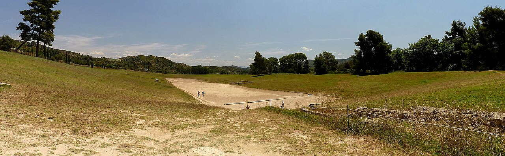
Глава 01 · точка отсчёта
Пауза длиной
1500 лет
Последние зафиксированные античные Игры прошли в 393 году. Феодосий I запретил языческие культы — и Олимпия замолчала. Следующая точка — Афины, 1896.
Афины-1896: 14 стран, 43 вида программы. Телевидения ещё нет — о результатах узнают из газет, телеграмм и на пароходах.
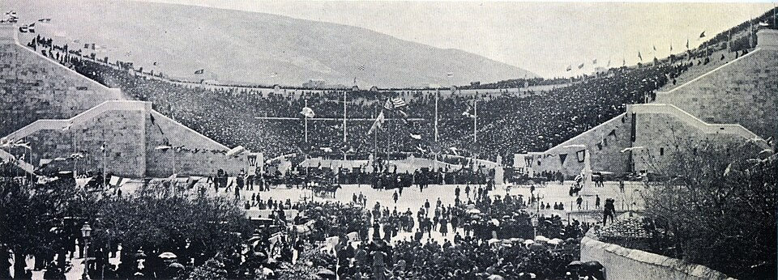
Глава 02 · символы
Язык без
перевода
Кольца, флаг, девиз и огонь — система знаков, которую узнают без слов.
Пьер де Кубертен: пять континентов, пять цветов.
Антверпен: белое полотно и олимпийские кольца.
Citius, Altius, Fortius. С 2021 — Communiter.
Амстердам: олимпийский огонь на стадионе.
Берлин: огонь начинают нести из Олимпии.
1972 — Мюнхен: первый официальный талисман, такса Вальди.
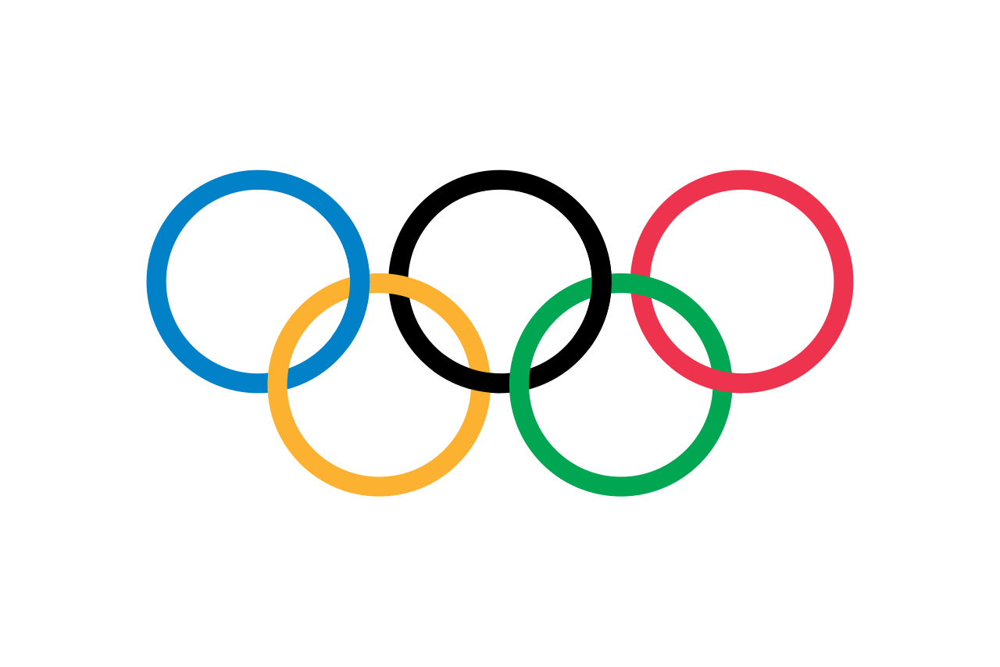
Глава 03 · технологии и медиа
Сначала измерить.
Потом показать.
Секундомеры, фотофиниш и спутник превратили спорт в точное и глобальное зрелище.
Электронный хронометраж в Стокгольме.
Первый олимпийский фотофиниш.
Фотоэлементы на финише в Лондоне.
GPS, сенсоры и аналитика.
Первая телевизионная трансляция.
Токио: сигнал через спутник Syncom 3.
Пекин: 4,7 млрд телезрителей.
Париж: около 5 млрд на всех платформах.
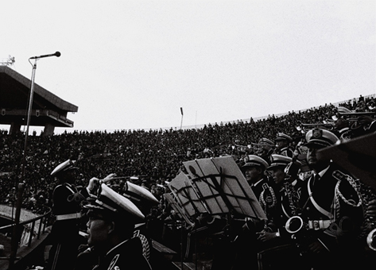
Глава 04 · люди и рекорды
Истории,
которые остаются
За цифрами стоят люди. Их истории превращают рекорд в событие, которое помнят десятилетиями.
Четыре золота в Берлине.
Первая идеальная десятка.
23 золотые медали.
Восемь золотых и мировые рекорды.
Сегодня — Симона Байлз и Кэти Ледеки: новый масштаб внимания и ответственности.
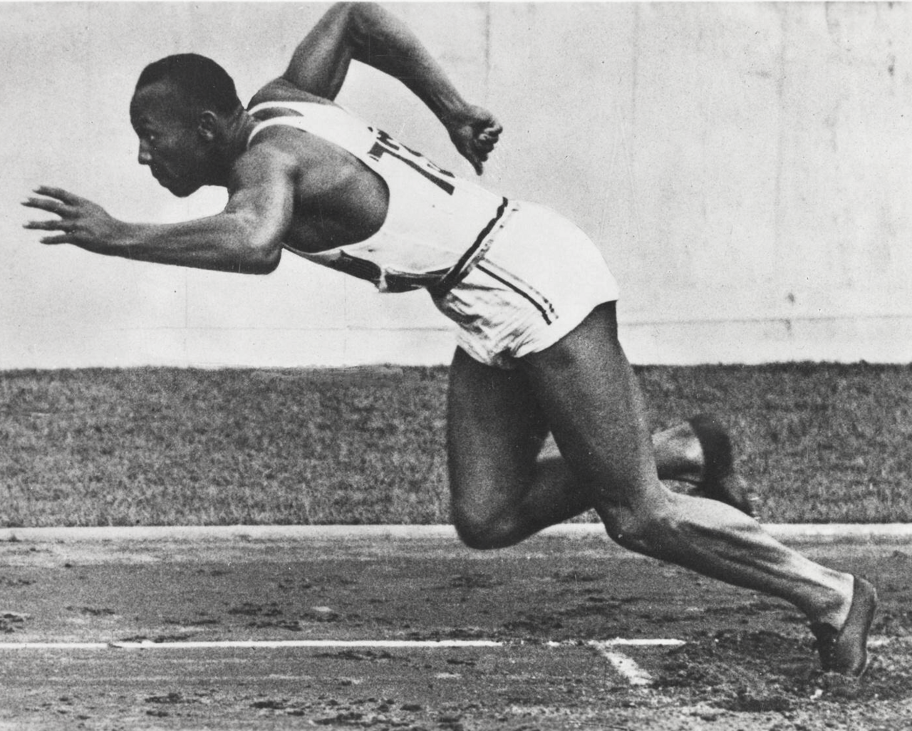
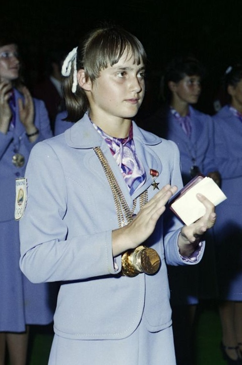
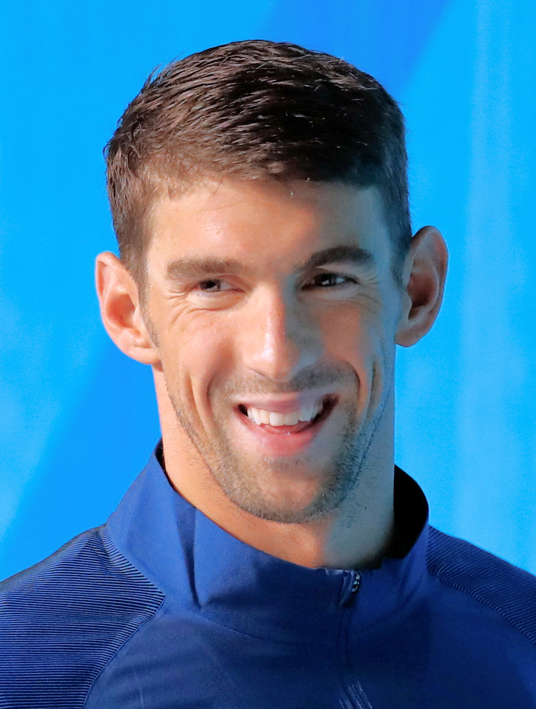

Глава 05 · Россия
Россия
на Олимпиаде
Одна из самых титулованных олимпийских стран — от дебюта СССР до Игр в Москве и Сочи.
Хельсинки: дебют СССР на Олимпийских играх.
Москва принимает XXII летние Игры.
Сочи: первые зимние Игры в России.
медалей Ларисы Латыниной, из них 9 золотых.
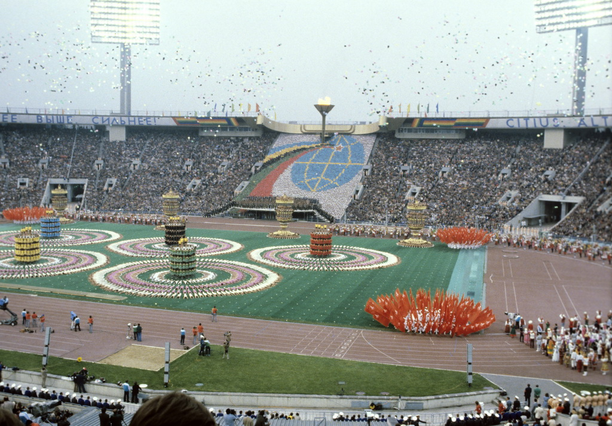
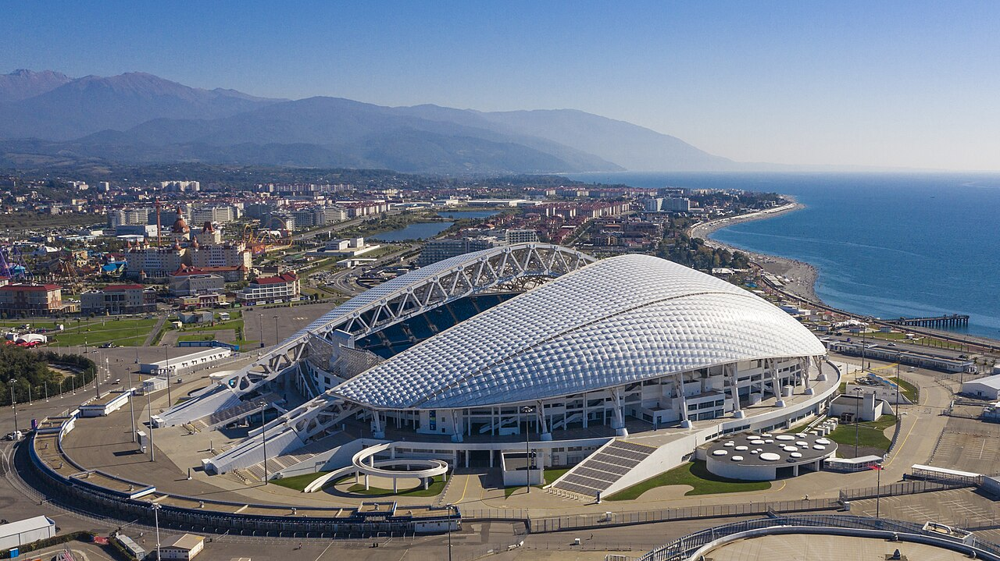
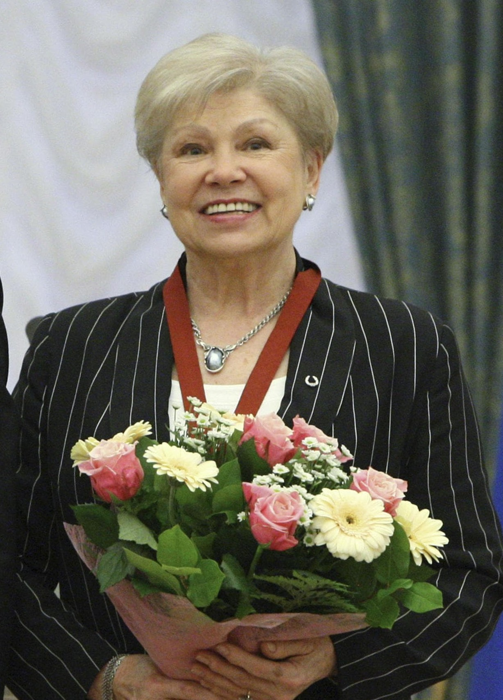
Глава 06 · сегодня
Что дальше
Масштаб, наследие и новые вызовы: Олимпиада ищет баланс между зрелищем и ценой.
Рекордный охват и цифровая Олимпиада.
Зимние Игры в итальянских Альпах.
Третьи Игры города и новый медиа-эксперимент.
Климат, стоимость и борьба за внимание — главные вызовы следующего десятилетия.
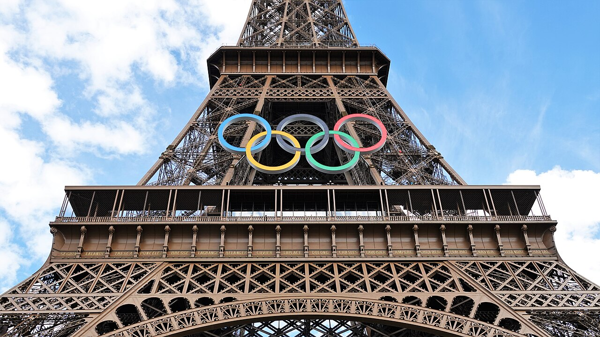
Наш проект · 1896–2028
Вся Олимпиада
в одной сцене
Интерактивная история Игр: глобус и карта, таймлайн, эпохи, медали и талисманы.
Нажмите →, чтобы открыть приложение
Открыть приложение